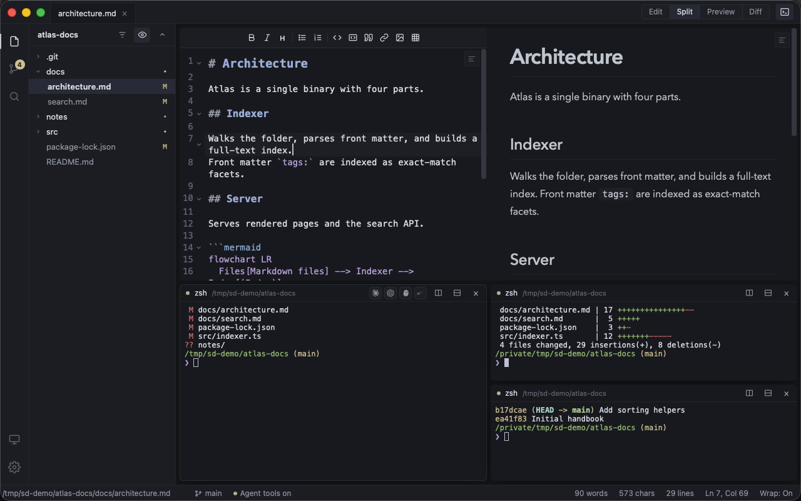
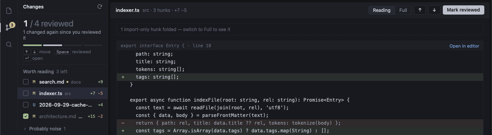
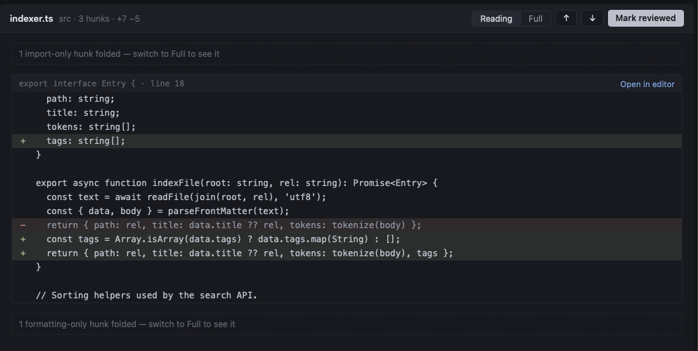
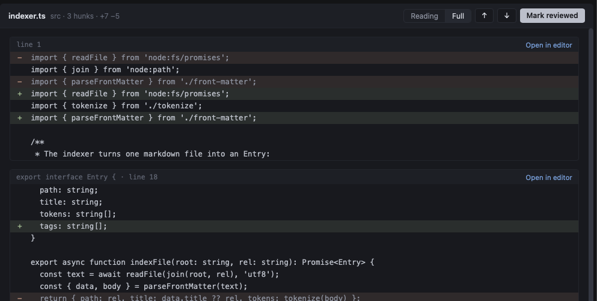

SparkDown is a small, local markdown editor for the files you and your AI agents write. Run the agent in a split terminal, watch its files change, and review each one in a single queue.
For macOS on Apple Silicon and for Linux. About 4 MB installed on Mac. Free and open source (MIT).
A markdown document opens in Edit view. Command 2 shows it beside its live preview, Command 3 shows only the preview, and Command 4 shows the reading diff with a formatting-only hunk folded. Back in Split, Control backtick opens the terminal drawer, Command D splits it right and Command Shift D splits it down, so three terminals run git status, the diff stat and the log.

The review loop
Open the folder your agent works in. SparkDown follows the files on disk and keeps a list of what changed, so you read each change once and know what is left.
An agent in the terminal edits docs/search.md, src/indexer.ts and package-lock.json and writes notes/cache-decision.md. Each file flashes in the tree and gets an M or U badge, and the Changes badge counts the files worth reading. The Changes view shows 0 of 3 reviewed, the three files with their line counts, and package-lock.json folded under Probably noise. Space marks search.md reviewed and the down arrow moves on; after cache-decision.md is marked too, the count reads 2 of 3. Then the agent edits search.md again: it goes back to pending with a dot, and the count drops to 1 of 3.
- Run the agent in a terminal. Claude Code, Codex, opencode or any other CLI runs in the terminal drawer. Split it right or down, up to four panes. With tmux, sessions survive a restart.
- See what it changed. The Changes view lists every changed file with its line counts. Files worth reading come first; lockfiles and generated files fold into a "probably noise" group.
- Mark it reviewed. Move with ↑ ↓ and press Space to mark a file reviewed. If the agent edits it again, it goes back to pending with a dot.

Read the change, not the churn
The reading diff folds hunks that only reorder imports or reformat code, so what is left is the change itself. A moved block of code is never folded, because order can matter. Switch to Full to see everything.


What else it does
- Markdown that reads like a document. Live preview with Mermaid diagrams, math, tables and code highlighting. Each tab has its own view: Edit, Split, Preview or Diff (⌘1–⌘4).
- Your agent can read the editor. A built-in MCP server lets agents in SparkDown's terminals see your open files, the line you are on, your selection and the git changes. Its one write tool edits the unsaved buffer, so you still review and save.
- Remote folders over SSH. Pick a host from
~/.ssh/config. Files, Changes and terminals all work on the remote folder, with your own keys. - Keyboard first. ⌘P finds a file, ⌘⇧P runs any command, and the status bar keeps your word, character and line counts in view.
- Small and native. About 4 MB on Mac. It uses the system web view instead of a bundled browser, and updates itself with signed releases.
Works with the agents you use
| Agent | How it gets SparkDown's tools |
|---|---|
| Claude Code, Codex, opencode | Added for each session when you launch it. Nothing is written to their config. |
| Gemini CLI, Kiro, Grok | Asks once, then installs with the agent's own mcp add. |
| Cursor CLI, Antigravity | Asks once, then adds one entry to the agent's MCP config file. |
| Any other CLI | Gets a short prompt that points it at a context file. |
Your files stay on your disk. There is no account and no telemetry, and SparkDown never calls an AI vendor's API. The only request it makes on its own is a check on GitHub for updates, at most once a day, with no identifier. You can turn it off in Settings.
Download
Free and open source under the MIT license. Every release is on GitHub.
macOS
Apple Silicon, macOS 10.15 or later. A 3 MB disk image.
Not notarized yet: on first launch, right-click the app and choose Open.
Linux
x86_64 .deb (recommended) or AppImage. Tested on Wayland with Hyprland.
An AUR package is coming.
Windows: a preview build is available. See docs/windows.md on GitHub.